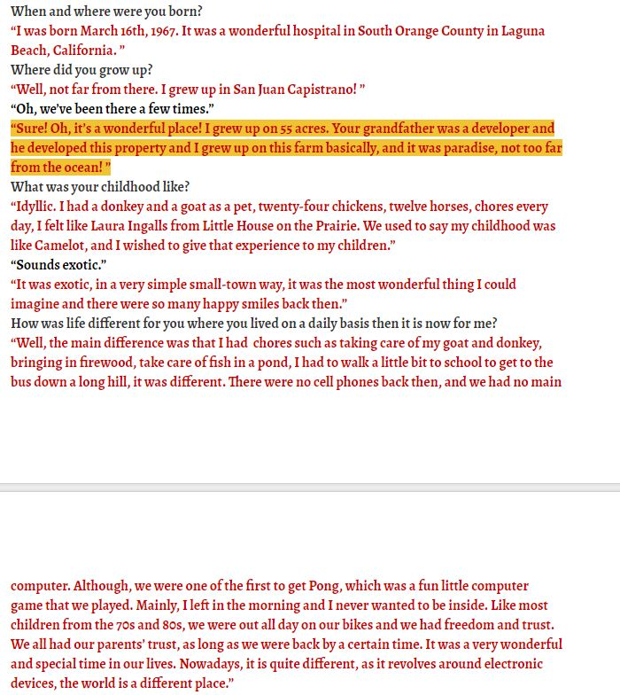
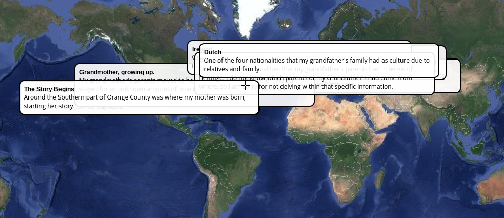

Now, here is the transcript for an interview that I have worked on for my first project of Semester 2 for Daramola, along with an annotated map and the audio to the interview itself. You may browse the other pages below.
Interview Audio
Noel - Project One
Noel - Project Two
Home Page
Daramola - Project Two